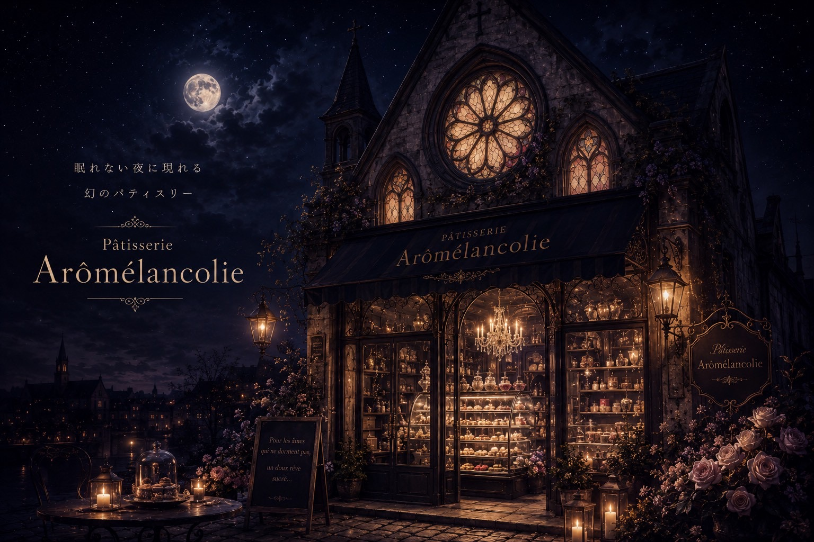

Bienvenue.
眠れない夜へ、ようこそ。
ここは、夜にだけ現れる
幻のパティスリー。
お菓子は、誰かを幸せにするだけではなく、
眠れない夜に寄り添うものだと、
私たちは信じています。
※ note・Instagram のURLを差し替えてください

Bienvenue à la
scroll ‹ そっと下へ ›

— 扉を開けて、店内へ —
LES PÂTISSERIES
夜のためだけに焼き上げた、幻の菓子たち。
ACCÈS
夜にだけ、灯りをともします。
| 店名 | Pâtisserie Arômélancolie |
|---|---|
| 住所 | 〒000-0000 ○○県○○市○○ 0-0-0 ※ 実際の住所に差し替えてください |
| 営業時間 | 21:00 〜 翌 3:00 （夜にだけ現れる幻のパティスリー） |
| 定休日 | 満月の夜 |
| 電話番号 | 000-0000-0000 |
NOTRE HISTOIRE
CONTACT
夜のあいだに、お便りを。